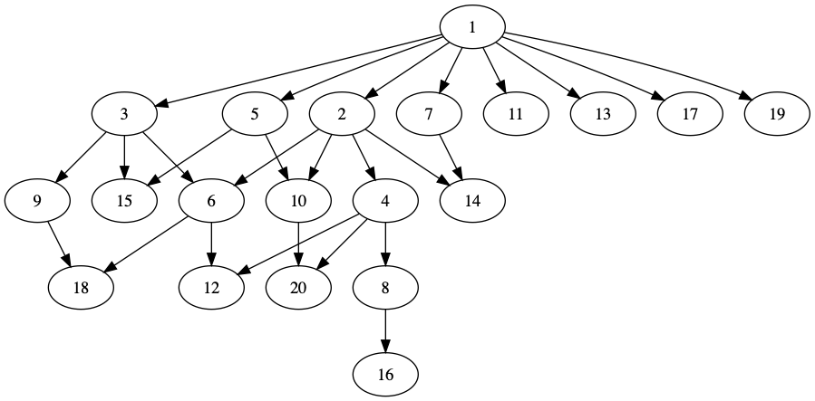

これ。700点問題。 個人的に何かと学びの多い問題だったように思います。
問題概要
a_i (i = 1..N)が与えられる。 x \in \{ 1.. N \}を0コ以上選び、xの倍数でないようなiのa_iの和を最大化する。
制約は1 \le N \le 100, |a_i| \le 10^9。
解法
この問題は解説が大変親切で、まぁこれ読めば良いんですけど……
- 2つの状態を割り振る問題であること
- 諸々の制約が全て罰則に変換できること。具体的には、
- そもそも得るもの(a_i)が負なら素直にやる
- a_iが正なら、先にもらっておいて逆の状況のときもらえなくなった=それだけ引かれた、とする
- 倍数の関係で矛盾があったら\infty
がポイントで、最小カットに帰着。 このへんの言い換え、フローに限らず何かと汎用性が高そうで学びがある。 符号で場合分けとかって物理やってると大体そのまま扱った方が自然だから浮かびにくい気がします。私だけか?
貪欲はダメなんですか、という話
最初に書いたのが「大きなxから順に、選んだ方が得するなら選ぶ」っていう貪欲だったんですよ。 ノリとしてはxを選んだときxより大きいものにしか影響しないのでそれより前は自由に決められるはずだから後ろからやれば良さそう、という感じです。
とりあえずN=20で倍数の関係を図にしてみたのがこれです。適当に辺を間引いてます。 
下にある頂点の価値が負だったらそれこそ何も言わずに消せば良いはずです。
問題は入る辺が2つ以上の頂点(上の図だと18とか)が正で残った時。 簡単のため3, 6, 9, 18だけ考えることにすると、 (a_6, a_{9}, a_{18}) = (-10000000, -1, 2)みたいな時にどうせ6を消すなら9も消しといた方が良かったじゃん、となる。
木とDAGの違い
冷静に考えると「そもそも木じゃないんだからそんなことないでしょ」のツッコミは入るべきだった気はする。 その辺の感覚が精進不足ってことなのかなぁ……
DPはDAGのノードに対する_関数_を順に計算していくこと(多分)なんですけど、ここでいう関数っていうのは本当に純粋なそのノードの関数である必要があります1。
今回の問題の操作は「関数」ではない、具体的には下の方の状態に影響するので↑みたいなのは無理な訳です。 まぁ見れば分かるんですけど……
もし上の図が木だったら貪欲(孫とかも見てるしDPとは言わない気がする)解でも多分大丈夫なはずです。 逆に言えば木の上で部分木に対して値を定める的なことをやる場合状態が変わっても良い可能性がある? まぁ今回はN=100だからという特殊事情もあるんですが。
とか書いておいてアレなんですが、データ構造を持ち回るDPとかありましたね…… ノードの性質を動的に持ってるだけなのかな……↩